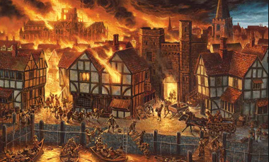
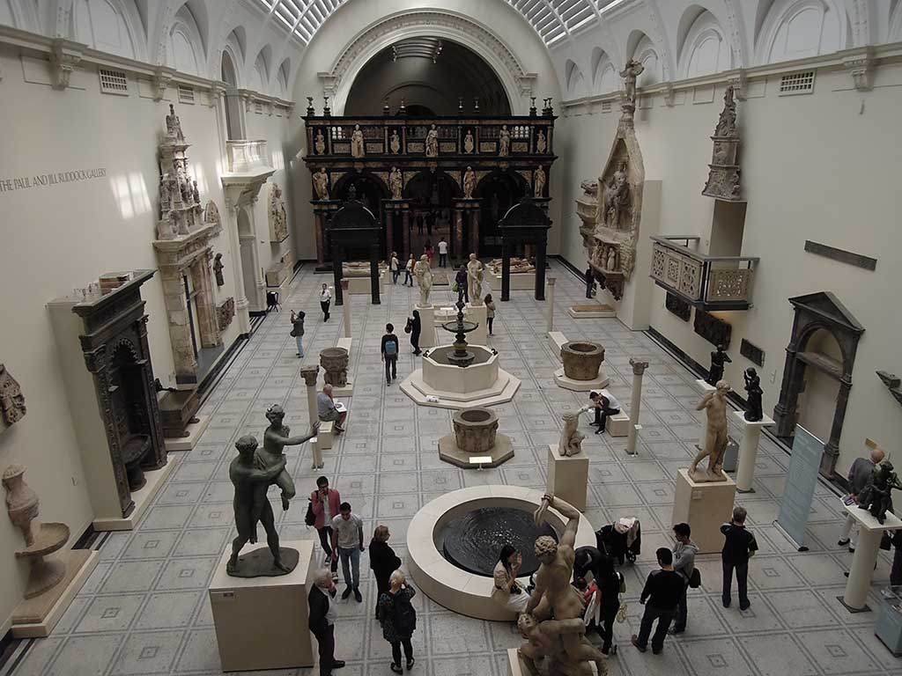
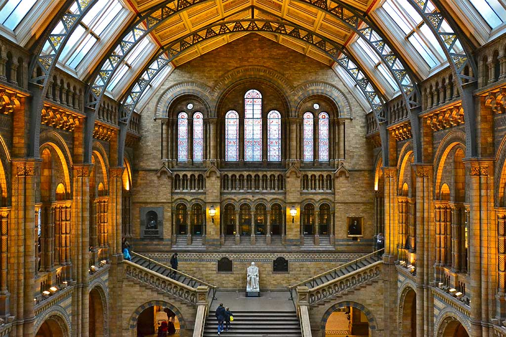
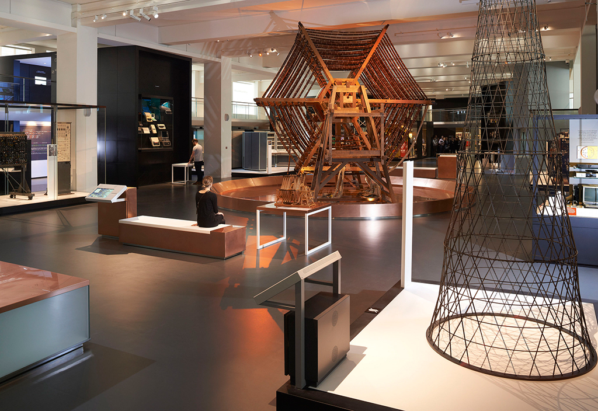
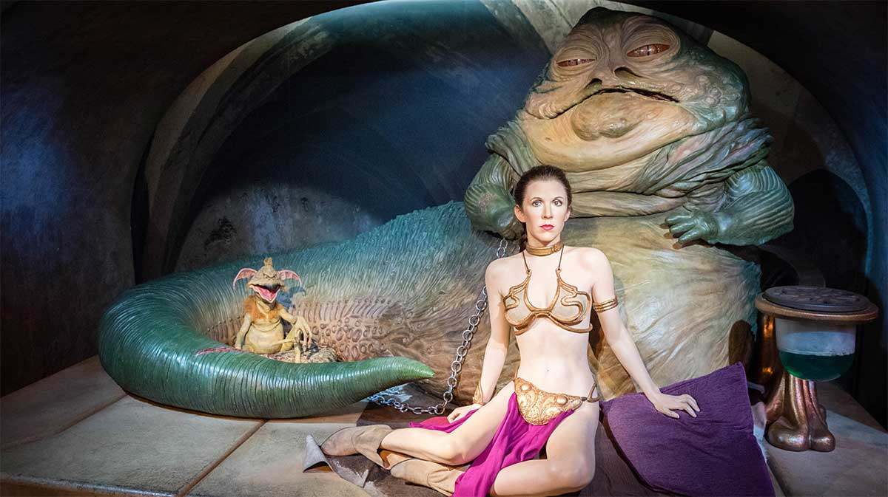

UN SCURT ISTORIC AL LONDREI
Londra, capitala Regatului Unit al Marii Britanii și a Irlandei de Nord, are o istorie care datează încă de acum 2000 de ani. În tot acest timp s-a dezvoltat, devenind una dintre cele mai mari capitale ale lumii, atât pe plan financiar, cât și pe plan cultural. O examinare atenta a istoriei Londrei poate sa explice felul în care mica asezare romana de pe malurile Tamisei, a devenit metropola multiculturala de astazi. Pe de altă parte, a avut și experiențe nefericite, ca războiul civil, ciuma, incendii devastatoare, bombardamente aeriene și atacuri teroriste.
Etimologia
Etimologia numelui Londra este incertă. Au fost multe teorii diferite avansate de-a lungul secolelor pentru originea numelui, cele mai multe putând fi respinse ca fanteziste pe motive lingvistice sau istorice, în timp ce câteva au o oarecare plauzibilitate. Nici una nu are vreo dovadă concludentă. Fapt este că în anul 43 d.Hr. romanii îl numeau Londinium.
Londra a fost iniţial un lăcaş celt. Aşezarea a fost fondată de romani în anul 43. În anul 61, oraşul a fost prădat, ars şi distrus în totalitate de celţii răsculaţi şi conduşi de regina Boadicea. După căderea Imperiului Roman, aşezarea a fost abandonată, însă a fost reocupată în secolul al X-lea. A crescut în acelaşi timp cu Westminster, un oraş din imediata vecinătate. Cele două oraşe s-au unit, devenind capitala Angliei în secolul al XII-lea.
Locuri istorice importante din Londra: Podul Londrei, Turnul Londrei, Palatul Westminster, Palatul Buckingham, The City, Catedrala Saint Paul din Londra, Catedrala Westminster, Palatul Alexandra, Battersea Power Station, Aeroportul Croydon, Observatorul astronomic Greenwich, Hyde Park, The Monument, Parliament Hill, Royal Society, Royal Institution, Thames Barrier, Tyburn, Waterloo International, Vauxhall Cross si Vauxhall Station.
Cateva poze cu Londra veche: 

 Teatrul Pavilion si strada Coventry din Piccadilly
Teatrul Pavilion si strada Coventry din Piccadilly Vizitatori pe treptele Galeriei Tate
Vizitatori pe treptele Galeriei Tate Whitehall din Piata Parlamentului
Whitehall din Piata Parlamentului Hipodromul din Londra, 1902
Hipodromul din Londra, 1902 Coltul Hyde Park
Coltul Hyde Park Piata Trafalgar de pe treptele Bisericii St. Martin in the Fields
Piata Trafalgar de pe treptele Bisericii St. Martin in the Fields Piata Trafalgar
Piata Trafalgar Podul Blackfriars si Bankside de pe malul de nord al Tamisei
Podul Blackfriars si Bankside de pe malul de nord al Tamisei Catedrala St. Paul, 1754
Catedrala St. Paul, 1754 Noua strada Oxford, Londra
Noua strada Oxford, Londra
 Tower Brigde< >
Tower Brigde< > Big Ben
Big Ben
Primul primar, Lord al Londrei, a fost ales în 1192. În 1209, a fost finalizat podul Londrei, construit din piatră. William Caxton înființează prima imprimerie în Westminster, în 1476. Viața în Londra avea însă și o latură violentă. Moartea Neagră sau ciuma a apărut pentru prima dată la Londra în 1348, revenind de câteva ori de-a lungul timpului, ultima dată în 1665. La momentul regimului Reginei Elisabeta I, între 1558 și 1603, Londra și restul țării a trecut printr-o serie de revolte religioase, cauzate de tatăl Elisabetei, Henric al VIII-lea, ce a rupt legăturile cu Roma, autoproclamându-se șef al bisericii protestante, o mișcare contracarată de încercarea surori sale, Mary I, de a reveni la catolicism. Ultimul monarh din dinastia Tudorilor, Elisabeta I, a stabilizat și a condus o țară ce avea să se țină departe de forța Invincibila Armada spaniolă, și avea să cucerească și să colonizeze noi teritorii îndepărtate, să sponsorizeze descoperirea de noi ținuturi, așa cum a facut-o cu Sir Francis Drake sau Sir Walter Raleigh. Southwark a devenit centrul de distracții al Londrei, ce cuprindea teatrele și ringurile însângerate ale luptelor dintre câini și urși.
Teatrul The Globe, locul în care au debutat piesele lui Shakespeare, a fost construit în 1599. Marele Incendiu ce a mistuit Londra în 1666 a condus, într-un final, la reconstrucția acesteia. Chiar dacă faimosul arhitect Christopher Wren nu a reușit să-și pună în aplicare planul de a construi orașul perfect, Londra, născută din cenușă precum pasărea Phoenix, a devenit un superputere economică a lumii, cu mult înainte ca termenul să fie definit. Colonizările și comerțul maritim ce au acompaniat dezvoltarea Londrei, au ajutat la crearea marelui Imperiu Britanic, transformând capitala în cel mai aglomerat port și capitala bancară a lumii până în secolul al XVIII-lea.
Marele incendiu din Londra
Londra a avut de infruntat un obstacol în 1666, când un incendiu de proporţii a distrus o mare parte a oraşului. Zona a fost reconstruită în aproximativ 10 ani. În aceeaşi perioada, Sir Christopher Wren a ridicat şi câteva dintre clădirile reprezentative ale Londrei. Unele dintre ele sunt încă în picioare şi atrag milioane de turişti în fiecare an, ca de exemplu Catedrala Sf. Paul. Până la sfârşitul secolului al XVIII-lea, Londra a devenit cel mai mare oraş al lumii.
Marele Incendiu din Londra a distrus părțile centrale ale Londrei începând cu ziua de duminică, 2 și până în ziua de miercuri, 5 septembrie 1666. Focul a pustiit centrul medieval al Londrei, aflat în interiorul vechiului zid roman al orașului.
 Incendiile nu erau ceva ieșit din comun la Londra, erau chiar inevitabile, dat fiind numărul mare de construcții din lemn, specific epocii. Mulți se așteptau ca, într-o bună zi, orașul să fie distrus de foc. Chiar în 1665, regele Charles îl avertizase pe primarul orașului că străzile înguste și casele de lemn reprezintă un pericol imens. Riscul era cu atât mai mare cu cât călduroasa și secetoasa vară a anului 1666 lăsase în urma sa un oraș uscat, lipsit de rezerve de apă.
Sub conducerea reginei Victoria (1837 – 1901), începe cea mai explozivă perioadă din istoria Londrei, cu o creștere de la 1 la 6 milioane de locuitori în doar 100 de ani. Gazda unor locuitori extrem de bogați, Londra a fost și adăpost pentru cei extrem de săraci, solitând la maxim toate serviciile publice urbane. Pe măsură ce reformatorii s-au concentrat mai tare pe nivelul de trai și condițiile din cartierele sărace și fabrici, au fost aprobate legi ce adoptau, printre altele, educația obligatorie la copii, îmbunătățind într-un fel viața. Anii 1880 și1890 au marcat o creștere a numpărului de membri din sindicate.
Londra secolului XX a fost marcată de cele două războaie mondiale. Monumentele dedicate celor căzuți în luptă, ne amintesc astăzi de numărul mare de pierderi omenești în timpul Marelui Război din 1914 – 1918. O generație mai târziu a fost martora intrării în cel de-al Doilea Război Mondial. Companiile blitz duse de Hitler între 1940 și 1941 sau atacurile cu rachete V1 și V2 din 1944 au ucis zeci de mii de vieți, distrugând mare parte a orașului. Emigranții de după război, ce soseau, în mare parte, din restul Imperiului Britanic, laolaltă cu un număr mare de evrei europeni ce au fugit în Londra în anii 1930, au contribuit la modelarea noii structuri cosmopolite a orașului. Londra din ziua de astăzi este o metropolă multiculturală, cu un cuvânt greu de spus în istoria lumii, ce va furniza noi materiale pentru cărțile de istorie ce vor urma.In timpul celui de-al Doilea Razboi Mondial, in 1941, o bomba puternica a distrus Camera Comunelor, parte din Sediul Parlamentului din Londra (Houses of Parliament), dar turnul cu ceas a ramas intact iar Big Ben a continuat sa masoare orele si minutele. Sunetul sau a fost transmit prin radio poporului britanic si intregii lumi, ca un indemn la speranta pentru toti cei care l-au auzit.
Bombardamentele germane din anii 1940 din vestul orașului, combinate, începând din anii 1950, cu decăderea Portului londonez și mutarea industriei în afara orașului, au condus la abandonarea a numeroase clădiri și terenuri, și la un aspect al zonei în general dezolant. Organizarea Jocurilor Olimpice din 2012 în estul Londrei va oferi ocazia regenerării și creșterii atractivității zonei. Docklands, zona vechiului Port al Londrei, a fost un experiment reușit de regenerare.
Urmărită de ghinion, capitala britanică a mai trecut printr-un impas în tipul celui de-al doilea război mondial. Mai bine de 30.000 de oameni au murit, iar multe clădiri au fost distruse. Reconstrucţia s-a făcut în timp, iar consecinţele au fost uitate. De-a lungul ultimelor decenii, Londra a fost nevoită să întâmpine şi câteva atacuri teroriste provocate de IRA şi Al-Qaeda.
Muzee pe care le puteti vizita in Londra:
Cele doua muzee Tate: Tate Britain si Tate Modern
Cunoscute in trecut sub numele de Galeria Tate, cele doua galerii Tate din Londra gazduiesc una dintre cele mai importante colectii de arta din lume. Deschisa in 1897 pentru a proteja colectia nationala de arta britanica, galeria a continuat sa faca achizitii si a necesitat mai mult spatiu pentru a afisa in mod corespunzator colectiile sale. Rezultatul final a fost crearea Tate Britain, in Millbank, pe partea de nord a Tamisei, unde a fost mutata colectia permanenta de picturi istorice britanice. Iubitorii de arta pot petrece o zi intreaga pentru a admira ambele galerii, conectate in mod convenabil de un feribot de mare viteza.
In afara muzeelor turistii pot urca la bordul ambarcatiunii numite Tate Boat si se pot bucura de o excursie de 20 de minute de la un muzeu la celalalt.
Tate Britain
Galeria Tate Britain a fost inaugurata in 1897 si e dedicata capodoperelor artei engleze incepand cu secolul XVI: lucrari de William Blake, John Constable, William Turner. Acesta este locul unde puteti admira cea mai mare colectie de arta britanica din lume. La sfarsitul anilor 1990, Tate Gallery - acum cunoscuta sub numele de Tate Britain - se confrunta cu o acuta criza de spatiu cauzata de ritmul foarte rapid de crestere a colectiei sale de arta moderna. Astfel a fost luata decizia de a imparti colectia si de a cauta o noua locatie care urma sa gazduiasca partea compusa din lucrari de arta moderna.
Tate Modern
Sora cu Tate Britain, Tate Modern are o extraordinara colectie si incredibilă galerie de arta modera cu exponate ce dateaza din 1900 pana in zilele noastre. De cand a fost deschis, in anul 2000, Tate Modern a devenit unul dintre cele mai populare muzee din Londra. Turistii care aleg sa viziteze Tate Modern se pot bucura de o gama larga de expozitii de arta moderna. La primul etaj, in sala turbinelor, oaspetii muzeului pot admira opere de arta comandate special care se actualizeaza an de an. La nivelul urmator exista o mica expozitie ce prezinta diferite opere ale unor artisti contemporani, atat britanici cat si internationali. La nivelul al treilea se gasesc galerii ce prezinta opere abstracte si expresioniste. Aici pot fi admirate capodopere de Matisse, Monet si Kapoor, pe langa opere ale multor alti artisti. La nivelul patru se gasesc expozitii temporare iar la nivelul cinci se gasesc expozitii din curente cum ar fi cubism, futurism, arta pop, arta minimalista, constructivism si arta conceptuala. Printre artisitii ale caror opere se pot vedea aici se numara Andy Warhol, Pablo Picasso sau Roy Lichtenstein. Urcati si la cafeneaua restaurant de la ultimul etaj, cu vedere spre Tamisa.
Muzeul Victoria si Albert din Londra (in engleza Victoria & Albert Museum)
Muzeul Victoria și Albert (cunoscut și sub numele de V & A) face parte dintr - un complex de muzee din South Kensington, care include Muzeul de Istorie Naturală și Muzeul de ștință. Astăzi, V & A acoperă aproape 13 hectare și conține 145 de galerii care acoperă aproximativ 5000 de ani de artă. Galeriile Britanice din cadrul muzeului sunt cele care atrag imediat atentia si contin cea mai bogata colectie de design si arta britanica dintre toate muzeele lumii. Exponatele acestei colectii reprezinta patru secole de exprimare artistica din anii 1500 pana in anii 1900. Turistii au ocazia de a explora istoria lunga de patru mii de ani a sticlei, pot admira sculpturi europene post clasice sau se pot delecta cu o colectie de fotografie care a inceput in 1852 sau se pot plimba prin camerele pline de comori ale copilariei cum ar fi papusi, masinute de jucarie, jocuri si costume.
 O sala din V & A Museum Aceste expozitii sunt numai cireasa de pe tort. Muzeul Victoria si Albert din Londra detine si o impresionanta colectie de arta decorativa din Orientul Indepartat, o expozitie de moda si bijuterii ce dateaza din secolul al 17-lea pana astazi, o impresionanta colectie de obiecte decorative din metal si mai mult de 14000 de obiecte de mobilier din Marea Britanie, Europa Continentala si America, ce dateaza din Evul Mediu pana in zilele noastre. Cu o colectie ce numara peste patru milioane de exponate, Victoria and Albert Museum din Londra este cel mai mare muzeu de arte decorative din lume. Este de asemenea si unul dintre cele mai interesante si deosebite muzee din capitala Marii Britanii.
British Museum
British Museum este cel mai vechi si unul dintre cele mai mari muzee din lume. Acest muzeu de neratat, a fost fondat in 1753, iar in 2000 s-a imbogatit cu Great Court, intrare proiectata de Norman Foster. Gazduieste peste 13 milioane de artefacte din lumea antica, inclusiv exponate arheologice extraordinare cum sunt frontoanele Parthenonului din Atena (a doua jumatate a secolului V i.Hr.) si Piatra de la Rosetta (196 i.Hr.). Sunt putine locuri unde pot fi admirate atatea comori ale tuturor timpurilor sub acelasi acoperis. In mod normal British Museum este printre cele mai vizitate obiective turistice in Londra. Turistii vor fi fascinati de mumiile egiptene sau vor fi inspirati de superbele expozitii de desene si schite care se schimba de cateva ori pe an.
Muzeul de Istorie Naturala din Londra - Natural History Museum
Ceea ce a inceput ca o colectie privata a unui singur om, a evoluat incet dar sigur pana a devenit unul dintre cele mai mari muzee de istorie a naturii din intreaga lume. Muzeul este gazduit intr-o cladire superba in stil neo-romanesc, proiectata de Alfred Waterhouse, care in zilele noastre este cunoscuta chiar sub numele de cladirea Waterhouse. Fiind initial parte integranta din British Museum, Muzeul de Istorie Naturala din Londra a luat fiinta printr-o simpla donatie spre patrimoniul Regatului Unit a colectiei lui Sir Hans Sloane, in anul 1753.

Muzeul de Istorie Naturală include colecțiile originale de 50.000 de cărți, 10.000 de animale conservate și 334 volume de specii de plante presate. Astăzi, colecția a crescut pentru a include peste 70 de milioane de articole care acoperă zoologia, paleontologia, mineralogia, entomologia și botanica. Muzeul este, de asemenea, un centru de cercetare științifică specializată în conservare și, având în vedere vârsta sa, are multe colecții de valoare istorică, inclusiv specimene colectate de Charles Darwin.
Muzeul de Stiinta din Londra - Science Museum
Muzeul de Stiinta din Londra este situat in South Kesington si este locul care gazduieste una dintre cele mai importante colectii de exponate ce trateaza evolutia stiintei si industriei, intr-un mod distractiv si foarte creativ. Muzeul de Stiinta este unul dintre cele mai interactive din oras, dispunand de o multime de exponate pe care turistii sunt invitati sa le experimenteze prin interactiune directa. Spre exemplu in aripa high-tech turistii sunt invitati sa-ti modifice digital fata pentru a se intineri sau pentru a vedea cum arata mult imbatraniti. De asemenea isi pot manipula vocea in diferite moduri care pot fi extrem de haioase. Printre cele mai populare atractii se numara galeria Launch Pad, unde pot fi vazute exponate ce prezinta diferite principii stiintifice dar si Puffing Billy, cea mai veche locomotiva cu aburi din lume. Tot printre favoritele publicului se numara si o capsula autentica de pe Apollo 10. Colectia Regelui George al III-lea prezinta instrumente stiintifice care amintesc de stiinta din secolul al 18-lea iar daca vizitatorii doresc sa isi odihneasca picioarele trebuie sa stie ca exista in cadrul muzeului un cinematograf IMAX cu o capacitate de 450 de locuri.

Copiii indragesc Science Night, un program care le permite sa doarma peste noapte intr-un cadru fascinant pentru ei. Acest program se desfasoara pe parcursul intregului an. In 2010 o noua expozitie permanenta despre climat s-a inaugurat la Science Museum, permitind vizitatorilor sa exploreze fenomenele stiintifice din spatele modificarilor climaterice, intr-un mod placut si memorabil.
Muzeul figurilor de ceara din Londra, Madame Tussauds
Turistii ce aleg sa viziteze acest obiectiv turistic trebuie sa fie pregatiti sa dea frau liber emotiilor si sa fie pregatiti sa intre in lumea vedetelor si a personajelor celebre. Faima si grandoarea pot fi simtite pe viu in sectiunea Blush, frica in Camera Groazei si momente de distractie maxima pot fi traite in Planetarium.

Tot la Madame Tussauds turistii se pot bucura si de atractia numita The Spirit of London (Spiritul Londrei), care-i poarta inapoi in timp spre vremurile din Londra de acum mai bine de 400 de ani. Aici pot experimenta si simti mirosul orasului si confortul taxiurilor londoneze. De la marele incendiu si epidemia de ciuma pana la Londra lui Chirstopher Wren si moda anilor 60, „Spiritul Londrei” este o atractie extraordinara care va poarta prin istoria unuia dintre cele mai marete orase ale lumii.
Puteți afla totul si despre Istoria Navală a Londrei la Muzeul Național Maritim din Greenwich și la bordul Cutty Sark și HMS Belfast. Totodată camerele de razboi ale lui Winston Churchill sunt printre cele mai fascinante si evocatoare sit-uri istorice din Londra, aceste camere sunt perfect conservate. De aici a dirijat campaniile militare britanice, menite sa apere Anglia in timpul celui de-al Doilea Razboi Mondial, prim-ministrul Winston Churchill. Poti vedea cabina mica in care Churchill se odihnea si studioul de radio improvizat de unde si-a difuzat discursurile catre britanici.